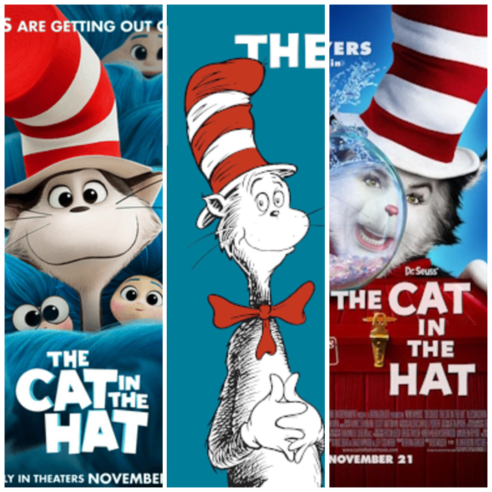
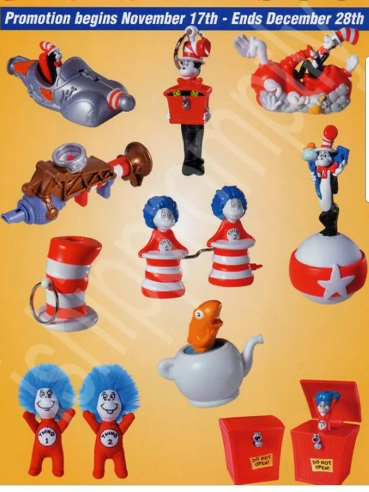
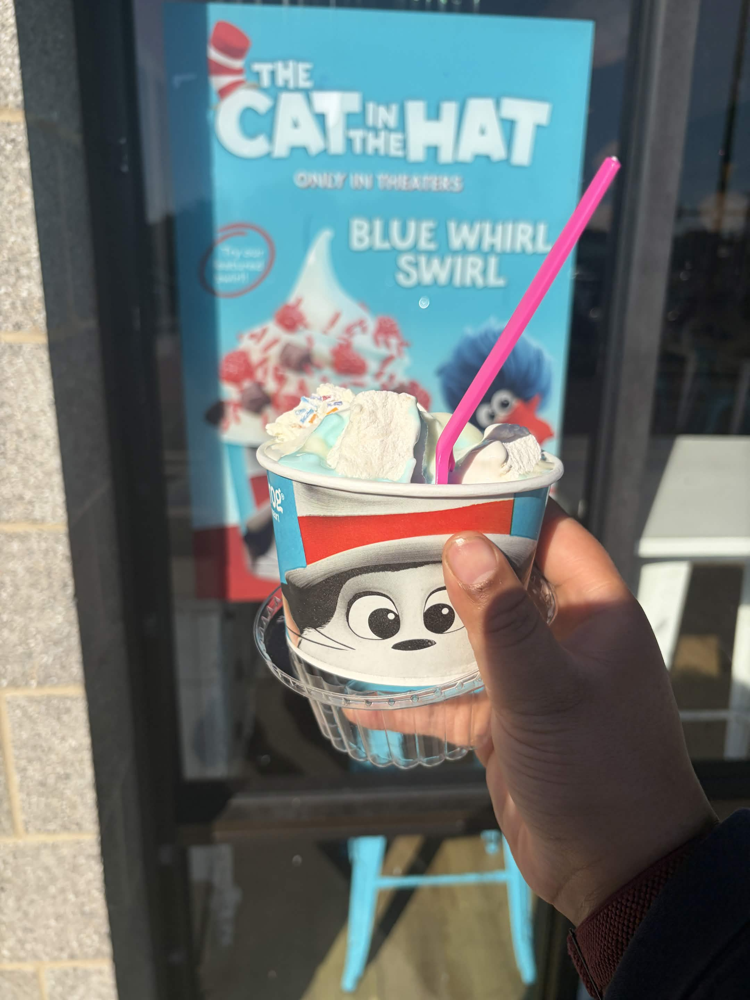
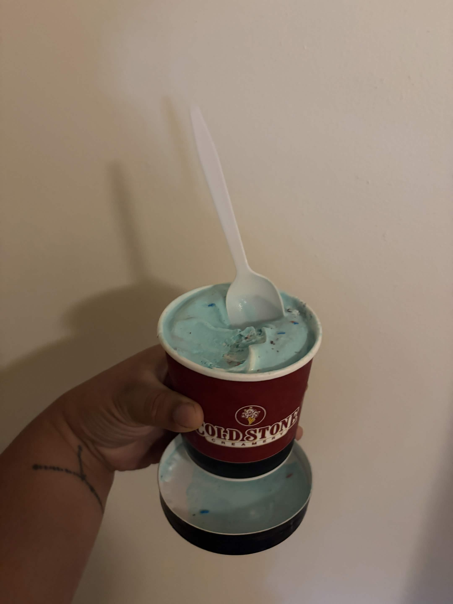
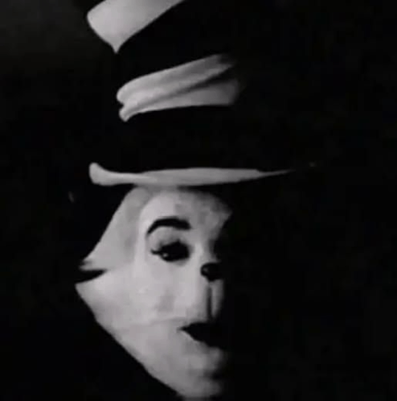

I tried the frozen promo treats for The Cat in the Hat. Here’s how that went.
Article Published by Ellison Larson, Terminally Online Degenerate at 2026/10/27 2:45 PM EST
So if you haven’t heard we are getting another cat in the hat adaptation. What is that now? 3? 4? I don’t know. Every time we get a cat in the hat ip add it’s always a different studio.

So this time it’s Warner Brothers animation. How did they promote it you ask? Not with Burger King toys like Universal Pictures but with ice cream. Or was it froyo? If you are also confused, I was too when I had saw during my post wax ritual trip to SweetFrog a The Cat in the Hat themed frozen yogurt after get days of notifications from Coldstone Creamery about a The Cat in the Hat themed ice cream. So now I have tried both so you don’t have to.

Starting off with the SweetFrog. The SweetFrog is a swirl combination of their blue cotton candy and vanilla flavored frozen yogurts. I decided like a serial killer to top mine with liquidized marshmallow fluff and marshmallows.

This one you really don’t taste the vanilla. The cotton candy dominates the space and you almost forget that this is a yogurt.
Now for the Coldstone. I didn’t have the spoons to get out to our nearest one along the highway and so I paid for someone to deliver it to me. This one is also cotton candy based, but is loaded with Oreos, blue and red sprinkles, and whipped topping.

While I love cotton candy Dippin’ Dots, the ice cream base tastes like made it from Lucky Charms milk made using only the moon marshmallow and the grains the kids hate to eat. As a result the cotton candy doesn’t dominate the flavor and the main flavor source comes from the mix-ins, which hold a stronger flavor impact on the profile.

Unfortunately I can’t say which is better because while these two companies are competitors, both are competing coexistently in the frozen treat space. I will say though this is a wild move from Wakko, Yakko, and Dot to promote one movie in two different competitors like that because froyo and ice cream are not the same. Like at all. But if I find out there is another one I am tossing all three of them into Larry Ellison’s matzo ball soup.